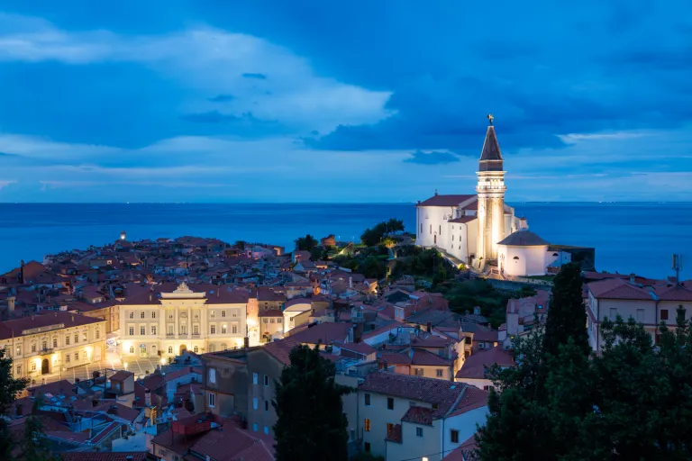

Towns and cities may be noisy, busy, stressful, and congested - yet they provide amazing opportunities for photos. You can capture gorgeous skyline shots, amazing snaps featuring architectural landmarks,
images of passersby dwarfed by giant skyscrapers, and so much more.
However, if you're new to the city or you're an urban photo veteran in a creative rut, you might be looking for a few helpful ideas; that's where this article comes into play.
Below, I share six easy ideas for city photography. Whether you live in a bustling metropolis or a sleepy seaside town, you're bound to find something on this list. So without further ado, let's dive right in, starting with:
5 Ideas for Stunning City Photography (+ Examples)
- City skyscrapers
- The nocturnal cityscape
- City reflections
- Street scenes at night
- The city and its environment
1. City skyscrapers
While not every city offers skyscrapers, if you're lucky enough
to live in a busy area, you're bound to have access to a tall building or two - and these can make for amazing city photo subjects.
You have all sorts of options. For instance, you can travel to the base of a skyscraper and shoot upward. If the city features a handful of
skyscrapers across a small area, try getting into position beneath several of the buildings, then shoot a beautiful multi-skyscraper composition.
(Even better: Wait until the weather is foggy, then capture your favorite skyscrapers receding into the clouds.)
Another approach is to find a vantage point off in the distance and shoot toward the skyscraper using a wide-angle (or even a telephoto) lens.
If the city includes a lookout deck, you might try getting into position just before sunset to capture the buildings from above.
Another solid alternative is to find a parking garage with public access; these often afford great views of skyscrapers! Of course,
you can also try to find a place outside the main business district to shoot from:
Pay careful attention to the lighting. Sunrise and sunset can provide dramatic front light, backlighting, and side lighting, though you might also come during the middle of the day when the sun casts harsh shadows and turns skyscrapers into abstract geometric elements. Don't be afraid to experiment, either. Some of your shots may not work out, but the ones that do will make it all worth it!
2. The nocturnal cityscape

Cities look amazing at sunrise, sunset, and even during the day - but have you considered shooting your favorite cityscape locations at night?
Thanks to the bright lights of the city skyline, it's possible to create all sorts of gorgeous images after dark, including stunning long-exposure
shots that combine artificial lighting with dark alleys, eerie parks, and even moving water.
You can shoot from smack-dab in the middle of the city or from afar; the key is to bring a tripod and a remote release so you can use lengthy shutter speeds without issue.
It can also help to bracket your images and blend the files together using HDR techniques during post-processing.
A great time to shoot nocturnal cityscapes is just after dark. The light from the sky won't have completely faded, giving you a bit more illumination (and color) to work with,
and the building lights will generally provide a gorgeous golden glow.
Also, be sure you think carefully about safety. Don't linger too long in any one place, make sure you're always aware of your surroundings, and whatever you do, don't leave your equipment unattended.
Pro tip: Even if your goal is to shoot after the sun sets, set yourself up a half-hour or so in advance. That way, you have plenty of time to find a composition before the
conditions are right (and you can even experiment with the changing light as it shifts from light to dark).
3. City reflections
If you live in a touristy city, certain buildings and city landmarks may feel so over-photographed that you're reluctant to point your camera in their direction.
One way to capture more original images of these locations is to change up your angle or perspective - in particular, I recommend finding some water, then
shooting with a wide-angle lens so as to include the buildings, any interesting landmarks, and their reflections.
Not all cities sit along bays, lakes, or rivers, of course, but that's no reason to give up on reflection shots. You can use puddles or fountains to capture interesting water reflections,
or you can use shiny glass or metal to get the result you're looking for.
For the best results, use a tripod and narrow your aperture until the entire scene is in focus. That way, the city and its reflection will turn out crisp and beautiful.
4. Street scenes at night
One of my city photography ideas (suggested above) is to photograph cityscapes at night, but I'd also encourage you to capture street scenes after dark - in other words,
look for opportunities to combine buildings and people for amazing results.
You can take a few approaches here. One option is to use a tripod and tackle the street scenes like a cityscape shooter. Set up a composition, wait for the right person to walk through,
and when the moment is right, press that shutter button. (You'll want to keep an eye on your shutter speed, but even if the person is slightly blurry, that's okay; it's really more about the feeling of the entire scene.)
You might also consider shooting in busier areas with an ultra-long shutter speed; a 10-second exposure will capture the flow of traffic or people as they move across the scene and make for a breathtaking photo.
Alternatively, you can crank up your camera's ISO, make sure you have a reasonably fast shutter speed, and work handheld. That way, you can react more quickly to events on the street, and while the higher
ISO will degrade image quality, the noise can actually give your shots an interesting grungy look.
5. The city and its environment
Most city photographers capture images that focus on the buildings and their features, but if you're after truly unique images, why not find a distant vantage point and see if you can contextualize the city?
By including the surrounding forests, plains, lakes, or suburbs, you can give viewers a sense of the city and its environment. You generally will need to find a vantage point of some sort - here, a drone can be helpful,
though you can also shoot from a distant hill or structure.
A wide-angle lens generally gives great results, though I'd encourage you to work with a variety of focal lengths to achieve different effects!
City photography ideas: final words
Six easy ideas for amazing shots of cities. Hopefully, you're now feeling inspired - and you're ready to head out with your camera and capture some gorgeous photos!